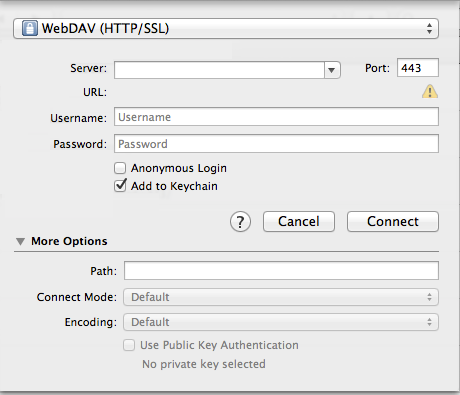

Setting up WebDAV using Cyberduck
Note: There must be at least one object (file, folder etc.) in the course or project resource area before you begin the setup procedure. This procedure needs to be done once for each site before you can use WebDAV to transfer files to and from any one site.
- Download the Cyberduck WebDAV client.
- Download the most recent version of
Cyberduck at: http://cyberduck.io/.
There are versions for OSX and Windows, so
select the appropriate version for your
operating system.
- Double-click the downloaded file
- For OSX, a disk image with a name similar to Cyberduck-4.2.1 (or higher) should now be available. Simply drag and drop the folder from the disk image to your Applications folder.
- For Windows, the Cyberduck installer
should run and guide you through the
installation process.
- Once installed, open the Cyberduck application.
- Click the Open Connection button (or the menu item File > Open Connection).
- You will be presented with a form similar to this (taken from Cyberduck v4.2.1 on Mac OS X):

- Complete the form as follows:
- Select WebDAV
- Server, type (or copy and paste): hostname
- Port, type (or copy and paste): 80
- Username, enter your NYU NetID:
- Password, enter your NYU password
- Click and expand More options.
- Path, type (or copy and paste) the last part of the "Step 1" URL noted above: dav/xxxx-xxxx-xxxx
- Click Connect.
You will now see a window on your screen that
represents the resources that are in your site.
Simply drag and drop between this window and other
windows to transfer files to and from your NYU Classes
site's resources folder.